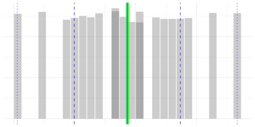
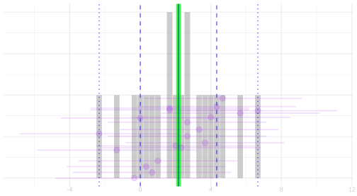

Randomization: Precision and Power
Picking Up Where We Left Off
Where We Are Substantively

- Each person j \in \{1 \ldots m\} in our study has two potential outcomes, \ingroupb{y_j(1)} and \ingroupa{y_j(0)}.
- Their difference \tau_j = \ingroupb{y_j(1)} - \ingroupa{y_j(0)} is person j’s individual treatment effect.
- Each person receives only one treatment, so we never observe both outcomes for one person.
- Instead, we shuffle m_1 people into treatment and m_0 = m - m_1 into control.
- Then we take the difference in observed group means. \hat\tau = \ingroupb{\hat\mu(1)} - \ingroupa{\hat\mu(0)} = \ingroupb{\frac{1}{m_1}\sum_{j:W_j=1} y_j(W_j)} - \ingroupa{\frac{1}{m_0}\sum_{j:W_j=0} y_j(W_j)}.
- Last time we saw that the centre \E(\hat\tau) (blue) lands right on the average treatment effect \bar\tau (green).
- Today we work out the spread around it.
The Indicator Trick

| j | \ingroupb{y_j(1)} | \ingroupa{y_j(0)} | \tau_j |
|---|---|---|---|
| 1 | 6 | 2 | 4 |
| 2 | 0 | 0 | 0 |
| 3 | 4 | 1 | 3 |
| 4 | 7 | 7 | 0 |
| 5 | 8 | 4 | 4 |
| 6 | 2 | 0 | 2 |
- Look at person j = 3 in the table, with \ingroupb{y_3(1) = 4} and \ingroupa{y_3(0) = 1}.
- Under a shuffle, treatment W_3 is random, so the realized outcome y_3(W_3) is random too.
- What is the product 1_{=1}(W_3) y_3(W_3) for each possible value of W_3?
- Checking both values of W_3 shows that we can replace the random W_3 inside y_3(W_3) with the constant 1. 1_{=1}(W_3) y_3(W_3) = \begin{cases} 0 \times \ingroupa{y_3(0)} = 0 & \text{when } W_3 = 0 \\ 1 \times \ingroupb{y_3(1)} = \ingroupb{4} & \text{when } W_3 = 1 \end{cases} = 1_{=1}(W_3) \ingroupb{y_3(1)}.
- More generally, for any person j and treatment w, multiplying by 1_{=w}(W_j) fixes the argument of y_j(\cdot) at w.
- That lets us write the group mean as a sum over all m people. 1_{=w}(W_j) y_j(W_j) = 1_{=w}(W_j) y_j(w) \qqtext{so} \hat\mu(w) = \frac{1}{m_w}\sum_{j=1}^m y_j(w) 1_{=w}(W_j).
Why the Difference of Group Means Targets the Average of Individual Effects
- Using the indicator trick, each group mean can be written as a sum over all m people in the study. \hat\mu(w) = \frac{1}{m_w}\sum_{j=1}^m y_j(w) 1_{=w}(W_j).
- Every person has the same chance of being in group w, \E\{1_{=w}(W_j)\} = \frac{m_w}{m}, so we can take expectations. \E\{\hat\mu(w)\} = \frac{1}{m_w}\sum_{j=1}^m y_j(w)\frac{m_w}{m} = \frac{1}{m}\sum_{j=1}^m y_j(w) = \mu(w).
- Now take the expectation of \hat\tau = \ingroupb{\hat\mu(1)} - \ingroupa{\hat\mu(0)} and combine the two population sums person by person. \begin{aligned} \E(\hat\tau) &= \E\{\ingroupb{\hat\mu(1)} - \ingroupa{\hat\mu(0)}\} \\ &\explain{=}{linearity of $\E$} \E\{\ingroupb{\hat\mu(1)}\} - \E\{\ingroupa{\hat\mu(0)}\} \\ &\explain{=}{substituting $\E\{\hat\mu(w)\} = \frac{1}{m}\sum_{j=1}^m y_j(w)$ for $w=1$ and $w=0$} \frac{1}{m}\sum_{j=1}^m \ingroupb{y_j(1)} - \frac{1}{m}\sum_{j=1}^m \ingroupa{y_j(0)} \\ &\explain{=}{factoring out $\frac{1}{m}$ and pairing each person's two potential outcomes} \frac{1}{m}\sum_{j=1}^m \{\ingroupb{y_j(1)} - \ingroupa{y_j(0)}\} = \frac{1}{m}\sum_{j=1}^m \tau_j = \bar\tau. \end{aligned}
Exercise
\begin{array}{ccc||c|c|c} j & w_j & y_j(w_j) & \ingroupb{y_j(1)} & \ingroupa{y_j(0)} & \tau_j \\ \hline \hline 1 & 0 & 0 & & \ingroupa{0} & \\ 2 & 0 & 1 & & \ingroupa{1} & \\ 3 & 0 & 0 & & \ingroupa{0} & \\ 4 & 0 & 1 & & \ingroupa{1} & \\ 5 & 0 & 0 & & \ingroupa{0} & \\ \hline 6 & 1 & 1 & \ingroupb{1} & & \\ 7 & 1 & 1 & \ingroupb{1} & & \\ 8 & 1 & 0 & \ingroupb{0} & & \\ 9 & 1 & 1 & \ingroupb{1} & & \\ 10 & 1 & 1 & \ingroupb{1} & & \\ \hline \hline \end{array}
- In the candy survey, each of us chose whether to eat bitter dark chocolate.
- w_j = 1 if person j ate it, and w_j = 0 if not.
- Then we tasted a salty and a fruity bar, with y_j(w_j) = 1 for salty.
- 4 of the 5 who chose it prefer salty, against 2 of the 5 who declined.
- So the difference in group means is \hat\Delta = 0.8 - 0.4 = 0.4.
- Q. Fill in everyone’s other potential outcome in two ways that match what we observed.
- So that the dark chocolate has no effect on anyone.
- So that the average treatment effect \bar\tau is negative.
- Remember that in CausalDoku, randomization let us pretend both groups have the same values.
- Here nobody shuffled, so that rule is gone.
Solution
\overset{\textbf{(1) No effect}}{ \begin{array}{ccc||c|c|c} j & w_j & y_j(w_j) & \ingroupb{y_j(1)} & \ingroupa{y_j(0)} & \tau_j \\ \hline \hline 1 & 0 & 0 & \ingroupb{0} & \ingroupa{0} & 0 \\ 2 & 0 & 1 & \ingroupb{1} & \ingroupa{1} & 0 \\ 3 & 0 & 0 & \ingroupb{0} & \ingroupa{0} & 0 \\ 4 & 0 & 1 & \ingroupb{1} & \ingroupa{1} & 0 \\ 5 & 0 & 0 & \ingroupb{0} & \ingroupa{0} & 0 \\ \hline 6 & 1 & 1 & \ingroupb{1} & \ingroupa{1} & 0 \\ 7 & 1 & 1 & \ingroupb{1} & \ingroupa{1} & 0 \\ 8 & 1 & 0 & \ingroupb{0} & \ingroupa{0} & 0 \\ 9 & 1 & 1 & \ingroupb{1} & \ingroupa{1} & 0 \\ 10 & 1 & 1 & \ingroupb{1} & \ingroupa{1} & 0 \\ \hline \hline \end{array}} \qquad\qquad \overset{\textbf{(2) Negative average effect}}{ \begin{array}{ccc||c|c|c} j & w_j & y_j(w_j) & \ingroupb{y_j(1)} & \ingroupa{y_j(0)} & \tau_j \\ \hline \hline 1 & 0 & 0 & \ingroupb{0} & \ingroupa{0} & 0 \\ 2 & 0 & 1 & \ingroupb{0} & \ingroupa{1} & -1 \\ 3 & 0 & 0 & \ingroupb{0} & \ingroupa{0} & 0 \\ 4 & 0 & 1 & \ingroupb{0} & \ingroupa{1} & -1 \\ 5 & 0 & 0 & \ingroupb{0} & \ingroupa{0} & 0 \\ \hline 6 & 1 & 1 & \ingroupb{1} & \ingroupa{1} & 0 \\ 7 & 1 & 1 & \ingroupb{1} & \ingroupa{1} & 0 \\ 8 & 1 & 0 & \ingroupb{0} & \ingroupa{1} & -1 \\ 9 & 1 & 1 & \ingroupb{1} & \ingroupa{1} & 0 \\ 10 & 1 & 1 & \ingroupb{1} & \ingroupa{1} & 0 \\ \hline \hline \end{array}}
- (1) Give each person their own observed preference at the other end of the pair.
- Every \tau_j = 0, so all of \hat\Delta = 0.4 comes from who chose the chocolate.
- (2) Give every chooser \ingroupa{y_j(0) = 1} and every decliner \ingroupb{y_j(1) = 0}.
- Three people have \tau_j = -1, so \bar\tau = -3/10 while \hat\Delta = +0.4.
- Which step of our unbiasedness proof breaks?
- The step \E\{1_{=w}(W_j)\} = \frac{m_w}{m}, which says everyone is equally likely to land in group w.
- When people choose, w_j is a property of person j, not a random W_j.
- Choosers are in the dark-chocolate group for sure, and decliners never are.
- So \hat\mu(1) averages y_j(1) only over the people who chose.
- They may be exactly the people who lean salty anyway, so the groups are imbalanced.
All 20 Shuffles of Our Six People
| j | \ingroupb{y_j(1)} | \ingroupa{y_j(0)} | \tau_j |
|---|---|---|---|
| 1 | 6 | 2 | 4 |
| 2 | 0 | 0 | 0 |
| 3 | 4 | 1 | 3 |
| 4 | 7 | 7 | 0 |
| 5 | 8 | 4 | 4 |
| 6 | 2 | 0 | 2 |

- Back to our proof. All the randomness is in 1_{=w}(W_j). What does that tell us about \Var(\hat\tau)?
- With m = 6 people and m_1 = 3 treated, there are \binom{6}{3} = 20 equally likely shuffles.
- Enumerating all 20 shuffles gives the exact randomization distribution of \hat\tau shown on the right.
- The green line is \bar\tau \approx 2.17 and the solid blue line is \E(\hat\tau) \approx 2.17.
- The dashed blue lines mark an interval holding two-thirds of the 20 estimates.
- The dotted blue lines mark one holding 95% of them.
- Averaging the squared deviations across all 20 shuffles gives the exact variance of \hat\tau. \Var(\hat\tau) = \frac{1}{20}\sum_{s=1}^{20} \{\hat\tau_s - \E(\hat\tau)\}^2 \approx 5.094.
Why Isn’t This Just Our Georgia Variance Formula?
- In Georgia, we drew n_1 voters from group 1 and n_0 voters from group 0 independently.
- If \ingroupb{\hat\mu(1)} and \ingroupa{\hat\mu(0)} were independent with-replacement sample means, the variance would be \frac{\ingroupb{\sigma^2(1)}}{m_1} + \frac{\ingroupa{\sigma^2(0)}}{m_0}.
- Why doesn’t that simple sum give the exact variance when we shuffle one population of m people?
- Two things happen when a shuffle splits m people into m_1 treated and m_0 = m - m_1 control.
- Within each arm, the m_w people are drawn without replacement from all m.
- So 1_{=w}(W_j) and 1_{=w}(W_k) are negatively correlated.
- Across the two arms, \ingroupb{\hat\mu(1)} and \ingroupa{\hat\mu(0)} are not independent.
- Whoever is not placed in treatment lands in control.
- Within each arm, the m_w people are drawn without replacement from all m.
- Because \hat\tau = \ingroupb{\hat\mu(1)} - \ingroupa{\hat\mu(0)} is a difference of two dependent random variables, we must keep their covariance. \Var(\hat\tau) = \Var\{\ingroupb{\hat\mu(1)}\} + \Var\{\ingroupa{\hat\mu(0)}\} - 2\Cov\{\ingroupb{\hat\mu(1)}, \ingroupa{\hat\mu(0)}\}.
Variance Under Complete Randomization
Finite-Population Variances and Covariance
- Before computing \Var(\hat\tau), we define variances with denominator {m - 1}. S_w^2 = \frac{1}{m-1}\sum_{j=1}^m \{y_j(w) - \mu(w)\}^2 \qqtext{and} S_\tau^2 = \frac{1}{m-1}\sum_{j=1}^m (\tau_j - \bar\tau)^2.
- Compared to the population variance \sigma^2(w) with denominator m, this rescales by \frac{m}{m-1}. S_w^2 = \frac{m}{m-1}\sigma^2(w) \qqtext{where} \sigma^2(w) = \frac{1}{m}\sum_{j=1}^m \{y_j(w) - \mu(w)\}^2.
- Why switch from \sigma^2(w) to S_w^2 when we study shuffling without replacement?
- Our without-replacement formula \frac{\sigma^2(w)}{m_w}\frac{m - m_w}{m - 1} carried {m - 1} in its correction factor.
- Absorbing \frac{m}{m-1} into S_w^2 turns that factor into \frac{m - m_w}{m} = 1 - \frac{m_w}{m}.
- That makes every \frac{1}{m} term line up.
- We define the covariance between the two potential outcomes with the same denominator m - 1. S_{10} = \frac{1}{m-1}\sum_{j=1}^m \{\ingroupb{y_j(1)} - \ingroupb{\mu(1)}\}\{\ingroupa{y_j(0)} - \ingroupa{\mu(0)}\}.
Step 1. Variance of Each Group Mean
- Look again at our indicator rewrite for a single group mean. \hat\mu(w) = \frac{1}{m_w}\sum_{j=1}^m y_j(w) 1_{=w}(W_j).
- Shuffling picks m_w people uniformly without replacement from the m people in the study.
- So \hat\mu(w) is the mean of a simple random sample of size m_w from the numbers y_1(w) \ldots y_m(w).
- Applying our without-replacement variance formula gives the variance of each group mean. \Var\{\hat\mu(w)\} = \frac{\sigma^2(w)}{m_w}\frac{m - m_w}{m - 1} = \frac{S_w^2}{m_w}\left(1 - \frac{m_w}{m}\right) = \frac{S_w^2}{m_w} - \frac{S_w^2}{m}.
- That gives the first two pieces of \Var(\hat\tau). \Var\{\ingroupb{\hat\mu(1)}\} = \frac{\ingroupb{S_1^2}}{m_1} - \frac{\ingroupb{S_1^2}}{m} \qqtext{and} \Var\{\ingroupa{\hat\mu(0)}\} = \frac{\ingroupa{S_0^2}}{m_0} - \frac{\ingroupa{S_0^2}}{m}.
Step 2. Covariance Between the Two Group Means
- Now what about the covariance \Cov\{\ingroupb{\hat\mu(1)}, \ingroupa{\hat\mu(0)}\} between the treated mean and the control mean?
- Suppose people with high \ingroupb{y_j(1)} also tend to have high \ingroupa{y_j(0)}, so S_{10} > 0.
- If a shuffle treats the people with high \ingroupb{y_j(1)}, who is left for the control group?
- The people with low \ingroupa{y_j(0)} are left in control.
- So when \ingroupb{\hat\mu(1)} is above its mean, \ingroupa{\hat\mu(0)} is below its mean.
- To see this algebraically, use the treated people’s counterfactual control mean \hat\mu_{0,T}. \hat\mu_{0,T} = \frac{1}{m_1}\sum_{j=1}^m 1_{=1}(W_j)\ingroupa{y_j(0)}.
- The treated and the controls together are everyone, which writes \ingroupa{\hat\mu(0)} in terms of \hat\mu_{0,T}. m_1 \hat\mu_{0,T} + m_0 \ingroupa{\hat\mu(0)} = m\ingroupa{\mu(0)} \qqtext{so} \ingroupa{\hat\mu(0)} = \frac{m\ingroupa{\mu(0)} - m_1 \hat\mu_{0,T}}{m_0}.
- \ingroupb{\hat\mu(1)} and \hat\mu_{0,T} average over the same m_1 treated people, drawn without replacement. \Cov\{\ingroupb{\hat\mu(1)}, \hat\mu_{0,T}\} = \left(1 - \frac{m_1}{m}\right)\frac{S_{10}}{m_1} = \frac{m_0}{m}\frac{S_{10}}{m_1}.
- Since m\ingroupa{\mu(0)} is a constant, the covariance with \ingroupa{\hat\mu(0)} is -\frac{m_1}{m_0} times that one. \Cov\{\ingroupb{\hat\mu(1)}, \ingroupa{\hat\mu(0)}\} = -\frac{m_1}{m_0}\Cov\{\ingroupb{\hat\mu(1)}, \hat\mu_{0,T}\} = -\frac{m_1}{m_0}\cdot\frac{m_0}{m}\frac{S_{10}}{m_1} = -\frac{S_{10}}{m}.
Step 3. Combining the Pieces into Neyman’s Formula
- Now we substitute the two group variances and the covariance into \Var(\hat\tau). \begin{aligned} \Var(\hat\tau) &= \Var\{\ingroupb{\hat\mu(1)}\} + \Var\{\ingroupa{\hat\mu(0)}\} - 2\Cov\{\ingroupb{\hat\mu(1)}, \ingroupa{\hat\mu(0)}\} \\ &= \left(\frac{\ingroupb{S_1^2}}{m_1} - \frac{\ingroupb{S_1^2}}{m}\right) + \left(\frac{\ingroupa{S_0^2}}{m_0} - \frac{\ingroupa{S_0^2}}{m}\right) - 2\left(-\frac{S_{10}}{m}\right) \\ &= \frac{\ingroupb{S_1^2}}{m_1} + \frac{\ingroupa{S_0^2}}{m_0} - \frac{\ingroupb{S_1^2} + \ingroupa{S_0^2} - 2S_{10}}{m}. \end{aligned}
- Look at the numerator \ingroupb{S_1^2} + \ingroupa{S_0^2} - 2S_{10} in that last fraction. What is it?
- Each centered effect is \tau_j - \bar\tau = \{\ingroupb{y_j(1)} - \ingroupb{\mu(1)}\} - \{\ingroupa{y_j(0)} - \ingroupa{\mu(0)}\}.
- Squaring and summing over j = 1 \ldots m gives the variance of the individual effects. S_\tau^2 = \frac{1}{m-1}\sum_{j=1}^m (\tau_j - \bar\tau)^2 = \ingroupb{S_1^2} + \ingroupa{S_0^2} - 2S_{10}.
- Substituting S_\tau^2 gives Neyman’s variance formula under complete randomization. \Var(\hat\tau) = \frac{\ingroupb{S_1^2}}{m_1} + \frac{\ingroupa{S_0^2}}{m_0} - \frac{S_\tau^2}{m}.
Checking the Formula on Our Six People
| j | \ingroupb{y_j(1)} | \ingroupa{y_j(0)} | \tau_j |
|---|---|---|---|
| 1 | 6 | 2 | 4 |
| 2 | 0 | 0 | 0 |
| 3 | 4 | 1 | 3 |
| 4 | 7 | 7 | 0 |
| 5 | 8 | 4 | 4 |
| 6 | 2 | 0 | 2 |

- In our 6-person table with m = 6 and m_1 = m_0 = 3, these are the column means. \ingroupb{\mu(1) = 4.50} \qqtext{and} \ingroupa{\mu(0) \approx 2.33} \qqtext{and} \bar\tau \approx 2.17.
- Computing the three column variances with denominator m - 1 = 5 gives the inputs to Neyman’s formula. \ingroupb{S_1^2} = 9.500 \qqtext{and} \ingroupa{S_0^2} \approx 7.467 \qqtext{and} S_\tau^2 \approx 3.367.
- Plugging these into Neyman’s formula reproduces the exact variance of all 20 shuffles. \Var(\hat\tau) = \frac{\ingroupb{9.500}}{3} + \frac{\ingroupa{7.467}}{3} - \frac{3.367}{6} \approx \frac{19}{6} + \frac{112}{45} - \frac{101}{180} = \frac{917}{180} \approx 5.094.
Exercise
\overset{\textbf{Table A (constant effect)}}{ \begin{array}{c|c|c|c} j & \ingroupb{y_j(1)} & \ingroupa{y_j(0)} & \tau_j \\ \hline 1 & 4 & 3 & 1 \\ 2 & 3 & 2 & 1 \\ 3 & 2 & 1 & 1 \\ 4 & 4 & 3 & 1 \\ 5 & 3 & 2 & 1 \\ 6 & 2 & 1 & 1 \end{array}} \qquad\qquad \overset{\textbf{Table B (varying effects)}}{ \begin{array}{c|c|c|c} j & \ingroupb{y_j(1)} & \ingroupa{y_j(0)} & \tau_j \\ \hline 1 & 4 & 1 & 3 \\ 2 & 3 & 2 & 1 \\ 3 & 2 & 3 & -1 \\ 4 & 2 & 3 & -1 \\ 5 & 3 & 2 & 1 \\ 6 & 4 & 1 & 3 \end{array}}
- Suppose we randomize m_1 = 3 of m = 6 people to treatment in the two CausalDoku tables above.
- Q. What are \ingroupb{S_1^2}, \ingroupa{S_0^2}, S_\tau^2 and \Var(\hat\tau) in Table A and in Table B?
- Remember Neyman’s variance formula and the definition of each column’s variance.
\Var(\hat\tau) = \frac{\ingroupb{S_1^2}}{m_1} + \frac{\ingroupa{S_0^2}}{m_0} - \frac{S_\tau^2}{m}.
\begin{aligned} S_w^2 &= \frac{1}{m-1}\sum_{j=1}^m \{y_j(w) - \mu(w)\}^2 & \text{with } \ingroupb{\mu(1) = 3} \text{ and } \ingroupa{\mu(0) = 2} \text{ in both tables, and} \\ S_\tau^2 &= \frac{1}{m-1}\sum_{j=1}^m (\tau_j - \bar\tau)^2 & \text{with } \bar\tau = 1 \text{ in both tables.} \end{aligned}
- Tip
- Compute \ingroupb{S_1^2} and \ingroupa{S_0^2} once, since both tables have the same six numbers in the \ingroupb{y_j(1)} and \ingroupa{y_j(0)} columns.
- Compute S_\tau^2 for Table A and for Table B, then plug into \Var(\hat\tau).
Solution
\overset{\textbf{Table A (constant effect)}}{ \begin{array}{c|c|c|c} j & \ingroupb{y_j(1)} & \ingroupa{y_j(0)} & \tau_j \\ \hline 1 & 4 & 3 & 1 \\ 2 & 3 & 2 & 1 \\ 3 & 2 & 1 & 1 \\ 4 & 4 & 3 & 1 \\ 5 & 3 & 2 & 1 \\ 6 & 2 & 1 & 1 \end{array}} \qquad\qquad \overset{\textbf{Table B (varying effects)}}{ \begin{array}{c|c|c|c} j & \ingroupb{y_j(1)} & \ingroupa{y_j(0)} & \tau_j \\ \hline 1 & 4 & 1 & 3 \\ 2 & 3 & 2 & 1 \\ 3 & 2 & 3 & -1 \\ 4 & 2 & 3 & -1 \\ 5 & 3 & 2 & 1 \\ 6 & 4 & 1 & 3 \end{array}}
- Both tables have the same two columns of potential outcomes.
- The \ingroupb{y_j(1)} are \{4, 3, 2, 4, 3, 2\}, around \ingroupb{\mu(1) = 3}.
- The \ingroupa{y_j(0)} are \{3, 2, 1, 3, 2, 1\}, around \ingroupa{\mu(0) = 2}.
- So the two column variances are the same in both tables. \ingroupb{S_1^2} = \frac{(4-3)^2 + (3-3)^2 + (2-3)^2 + \cdots}{5} = \frac{1^2 + 0^2 + (-1)^2 + 1^2 + 0^2 + (-1)^2}{5} = \frac{4}{5} = 0.8 \qqtext{and} \ingroupa{S_0^2} = \frac{4}{5} = 0.8.
- Now how do S_\tau^2 and \Var(\hat\tau) = \frac{\ingroupb{S_1^2}}{3} + \frac{\ingroupa{S_0^2}}{3} - \frac{S_\tau^2}{6} compare across the two tables?
- In Table A, every person has \tau_j = 1 = \bar\tau, so S_\tau^2 = 0 and the third term drops out. \Var(\hat\tau) = \frac{\ingroupb{0.8}}{3} + \frac{\ingroupa{0.8}}{3} - \frac{0}{6} = \frac{1.6}{3} \approx 0.533.
- In Table B, the individual effects are (3, 1, -1, -1, 1, 3) around \bar\tau = 1, which gives a positive S_\tau^2. S_\tau^2 = \frac{2^2 + 0^2 + (-2)^2 + (-2)^2 + 0^2 + 2^2}{5} = \frac{16}{5} = 3.2 \qqtext{so} \Var(\hat\tau) = \frac{\ingroupb{0.8}}{3} + \frac{\ingroupa{0.8}}{3} - \frac{3.2}{6} = 0.
- Holding the marginal spreads \ingroupb{S_1^2} and \ingroupa{S_0^2} fixed, effect heterogeneity (S_\tau^2 > 0) makes \Var(\hat\tau) smaller, not larger!
The Unobservable Term and Conservative Standard Errors
What We Can Estimate and What We Cannot
- Look again at the three terms in Neyman’s variance formula. \Var(\hat\tau) = \frac{\ingroupb{S_1^2}}{m_1} + \frac{\ingroupa{S_0^2}}{m_0} - \frac{S_\tau^2}{m}.
- From the m_1 people we actually treated, we observe \ingroupb{y_j(1)} and estimate \ingroupb{S_1^2} with the sample variance \ingroupb{\hat S_1^2}. \ingroupb{\hat S_1^2} = \frac{1}{m_1 - 1}\sum_{j:W_j=1} \{\ingroupb{y_j(1)} - \ingroupb{\hat\mu(1)}\}^2 \qqtext{and} \ingroupa{\hat S_0^2} = \frac{1}{m_0 - 1}\sum_{j:W_j=0} \{\ingroupa{y_j(0)} - \ingroupa{\hat\mu(0)}\}^2.
- Each arm is a simple random sample without replacement from all m people, so both are unbiased. \E(\ingroupb{\hat S_1^2}) = \ingroupb{S_1^2} \qqtext{and} \E(\ingroupa{\hat S_0^2}) = \ingroupa{S_0^2}.
- Why can’t we estimate the third term S_\tau^2 from our experiment in the same way?
- Because we never observe \ingroupb{y_j(1)} and \ingroupa{y_j(0)} for the same person j, we never observe even a single \tau_j.
- In our CausalDoku puzzle, Table A (S_\tau^2 = 0) and Table B (S_\tau^2 = 3.2) came from the exact same observed data!
- So no formula built from the observed data alone can tell S_\tau^2 = 0 apart from S_\tau^2 > 0.
Neyman’s Conservative Standard Error
- Even though we cannot observe S_\tau^2, we know that S_\tau^2 \ge 0 because it is an average of squares.
- Dropping the non-negative term S_\tau^2 / m gives an upper bound on the true variance \Var(\hat\tau). \Var(\hat\tau) = \frac{\ingroupb{S_1^2}}{m_1} + \frac{\ingroupa{S_0^2}}{m_0} - \frac{S_\tau^2}{m} \le \frac{\ingroupb{S_1^2}}{m_1} + \frac{\ingroupa{S_0^2}}{m_0}.
- Plugging the observed sample variances \ingroupb{\hat S_1^2} and \ingroupa{\hat S_0^2} into that upper bound defines Neyman’s conservative standard error \mathrm{se}. \mathrm{se}^2 = \frac{\ingroupb{\hat S_1^2}}{m_1} + \frac{\ingroupa{\hat S_0^2}}{m_0} \qqtext{so} \mathrm{se} = \sqrt{\frac{\ingroupb{\hat S_1^2}}{m_1} + \frac{\ingroupa{\hat S_0^2}}{m_0}}.
- On average across shuffles, \E(\mathrm{se}^2) is at least as large as the true variance \Var(\hat\tau). \E(\mathrm{se}^2) = \frac{\ingroupb{S_1^2}}{m_1} + \frac{\ingroupa{S_0^2}}{m_0} = \Var(\hat\tau) + \frac{S_\tau^2}{m} \ge \Var(\hat\tau).
- When the treatment effect is constant across people (S_\tau^2 = 0), \E(\mathrm{se}^2) = \Var(\hat\tau) is exact.
- When treatment effects vary (S_\tau^2 > 0), our 95% confidence interval \hat\tau \pm 1.96\,\mathrm{se} is conservative.
Application 1. The NSW Job-Training Experiment

- In the National Supported Work experiment, m = 445 participants were randomized.
- m_1 = 185 went to job training and m_0 = 260 to control.
- Each faint dot is one participant’s 1978 earnings.
- The black dot and whiskers show \hat\mu(w) plus or minus one standard deviation \hat S_w.
Exercise 3. Randomization
- In our last two NSW exercises, we tried to understand the treated participants.
- We did that without using the randomized comparison group.
- We tried to find people like the NSW participants in the Current Population Survey (CPS).
- We made a pretty thoughtful comparison.
- Even so, seemingly secondary differences in population composition created bias.
- Our rough CPS peers were 51.4% married against 18.9% of the NSW treated group.
- Changing only that mixture moved the CPS mean by $324.
- The NSW investigators did not need to locate observational “people like them” afterwards.
- They randomized.
- The randomized control group provides the comparison generated by the study design itself.
- We no longer need to decide which observed characteristics define “people like them.”
- Nor must we measure them all and build a comparison with the right composition.
- Randomization handles that problem probabilistically through the design.
Exercise
- Suppose we use the randomized comparison in NSW, with m_1 = 185 in job training and m_0 = 260 in control.
- Their group means and standard deviations of 1978 earnings are these. \ingroupb{\hat\mu(1)} = \$6{,}349 \qqtext{and} \ingroupb{\hat S_1} = \$7{,}867 \qqtext{whereas} \ingroupa{\hat\mu(0)} = \$4{,}555 \qqtext{and} \ingroupa{\hat S_0} = \$5{,}484.
- Q. What are our estimate \hat\tau and our conservative 95% confidence interval for \bar\tau?
- Remember the difference in group means, Neyman’s conservative standard error and the normal-approximation interval. \hat\tau = \ingroupb{\hat\mu(1)} - \ingroupa{\hat\mu(0)} \qqtext{and} \mathrm{se} = \sqrt{\frac{\ingroupb{\hat S_1^2}}{m_1} + \frac{\ingroupa{\hat S_0^2}}{m_0}} \qqtext{and the interval is} \hat\tau \pm 1.96\,\mathrm{se}.
Solution
- The randomized groups give us these means and standard deviations of 1978 earnings. \begin{aligned} \ingroupb{\hat\mu(1)} &= \$6{,}349 \qqtext{and} \ingroupb{\hat S_1} = \$7{,}867 \qqtext{with} m_1 = 185 \qqtext{whereas} \\ \ingroupa{\hat\mu(0)} &= \$4{,}555 \qqtext{and} \ingroupa{\hat S_0} = \$5{,}484 \qqtext{with} m_0 = 260. \end{aligned}
- What are \hat\tau and our conservative 95% confidence interval for \bar\tau?
- Subtracting the group means gives \hat\tau, and plugging \ingroupb{\hat S_1} and \ingroupa{\hat S_0} into Neyman’s formula gives the standard error. \hat\tau = \ingroupb{6{,}349} - \ingroupa{4{,}555} = \$1{,}794 \qqtext{and} \mathrm{se} = \sqrt{\frac{\ingroupb{7{,}867^2}}{185} + \frac{\ingroupa{5{,}484^2}}{260}} \approx \$671.
- Using the normal approximation, this is our conservative 95% confidence interval for \bar\tau. \$1{,}794 \pm 1.96(\$671) = [\$479,\; \$3{,}109].
- The comparison is valid because the investigators randomized.
- How much does this estimate tell us about the effect of job training?
- The estimate is still extremely imprecise.
- The interval runs from $479, about 11% of the control mean, to $3,109, about 68% of it.
- The experiment treated too few people to reliably distinguish effects of substantively very different sizes.
- This returns directly to Exercise 1, where the treated mean alone came with an interval of \$6{,}349 \pm \$1{,}134.
- Our interval for the effect is wider still, at \pm\$1{,}315.
- The study’s original problem with precision did not disappear merely because the design was randomized.
Was NSW Big Enough?
- In the power deck, we used NSW as a pilot and looked at the treated men alone.
- Success meant an interval entirely above 75% of their CPS peers’ mean, $5,327.
- Taking their mean of $6,349 as the truth, 64% of intervals cleared that line.
- That was with 185 treated men, and 273 would have reached 80%. It looked fixable.
- Then we found that the CPS benchmark itself was biased.
- Randomization gives us the right benchmark, the control group, whose mean is $4,555.
- Success now means an interval for the effect entirely above $5,327 − $4,555 = $772.
- If our estimate of $1,794 were the truth, how often would a study NSW’s size get that evidence?
- Our estimate is 1.52 standard errors above $772. With Z standard normal, here is the power. \frac{\$1{,}794 - \$772}{\$671} \approx 1.52 \qqtext{so} \text{power} \approx \P(Z \ge 1.96 - 1.52) \approx 0.33.
- For 80% power, that distance must be 2.80 standard errors, and the standard error shrinks like 1/\sqrt{m}. \mathrm{se} \le \frac{\$1{,}022}{2.80} \approx \$365 \qqtext{so} m \ge 445 \times \left(\frac{671}{365}\right)^2 \approx 1{,}500.
- That is more than three times the 445 people the study had.
- Our interval, $479 to $3,109, puts treated earnings anywhere from $5,034 to $7,664.
- That runs from short of the success standard to past their peers’ mean of $7,103.
Takeaway
- Exercise 1. We need more data.
- The treated-group estimate is extremely noisy.
- Exercise 2. More data can make things worse when the estimator is biased.
- A small population-composition error seems innocuous at low precision.
- It becomes disastrous at high precision.
- Exercise 3. Randomization addresses the bias problem—but not the information problem.
- The NSW experiment gives us the comparison we wanted.
- It still cannot tell us very much because it did not treat enough people.
- The running example separates two requirements for useful statistical evidence. \boxed{\text{Are we estimating the right thing?}} \qqtext{and} \boxed{\text{Are we estimating it precisely enough?}}
- Large samples address the second question, not necessarily the first.
- Randomization can address the first question, but does not guarantee the second.
- Observational comparisons can be precisely wrong.
- Randomized experiments can be validly uninformative.
Application 2. The Michigan Social-Pressure Experiment
- Now apply the exact same formula to Gerber, Green and Larimer’s Michigan turnout experiment from Thursday.
- Among the m = 229{,}444 voters in the two arms we compared:
- m_1 = 38{,}201 received the Neighbors letter;
- m_0 = 191{,}243 received no letter.
- Because turnout is binary (0 or 1), each group’s sample variance is nearly \hat\mu(w)\{1 - \hat\mu(w)\}. \hat S_w^2 = \frac{m_w}{m_w - 1}\hat\mu(w)\{1 - \hat\mu(w)\} \approx \hat\mu(w)\{1 - \hat\mu(w)\}.
- In our two groups, that gives these variances. \begin{aligned} \ingroupb{\hat\mu(1)} &= \frac{14{,}438}{38{,}201} \approx 0.3779 \qqtext{so} \ingroupb{\hat S_1^2} \approx 0.3779(1 - 0.3779) \approx 0.2351 \qqtext{and} \\ \ingroupa{\hat\mu(0)} &= \frac{56{,}730}{191{,}243} \approx 0.2966 \qqtext{so} \ingroupa{\hat S_0^2} \approx 0.2966(1 - 0.2966) \approx 0.2086. \end{aligned}
- The estimated increase in turnout is 8.13 percentage points, with a conservative standard error of 0.27 percentage points. \hat\tau = \ingroupb{0.3779} - \ingroupa{0.2966} \approx 0.0813 \qqtext{and} \mathrm{se} = \sqrt{\frac{\ingroupb{\hat S_1^2}}{m_1} + \frac{\ingroupa{\hat S_0^2}}{m_0}} = \sqrt{\frac{\ingroupb{0.2351}}{38{,}201} + \frac{\ingroupa{0.2086}}{191{,}243}} \approx 0.0027.
- Our conservative 95% confidence interval for \bar\tau is [0.0760,\; 0.0866], or 7.6 to 8.7 points.
Designing an Experiment: Power and Allocation
Planning an Experiment Before We Run It
- Neyman’s conservative variance has the same two-group form we used to design our Georgia survey.
- Suppose we plan to randomize m people, a share f to treatment and 1 - f to control. f = \frac{m_1}{m} \qqtext{and} 1 - f = \frac{m_0}{m}.
- Writing \ingroupb{\sigma^2(1)} and \ingroupa{\sigma^2(0)} for planned outcome variances, we factor m out of \mathrm{se}^2. \mathrm{se}^2 = \frac{\ingroupb{\sigma^2(1)}}{fm} + \frac{\ingroupa{\sigma^2(0)}}{(1-f)m} = \frac{g(f)}{m} \qqtext{where} g(f) = \frac{\ingroupb{\sigma^2(1)}}{f} + \frac{\ingroupa{\sigma^2(0)}}{1-f}.
- Why do we plan sample size using the conservative variance without -S_\tau^2 / m?
- Before running the experiment, we do not know how much \tau_j varies from person to person.
- Planning with S_\tau^2 = 0 meets the precision target even if the effect is constant.
- If S_\tau^2 > 0, it gives us extra precision.
- As in Georgia, a two-sided 95% interval has 80% power against an alternative effect \tau_{\text{alt}}.
- That holds when \tau_{\text{alt}} is 1.96 + 0.84 = 2.80 standard errors from zero. \mathrm{se} \le \frac{|\tau_{\text{alt}}|}{2.80} \qqtext{and therefore} m \ge \frac{g(f)}{\mathrm{se}^2}.
Exercise
- Suppose we are planning a follow-up job-training experiment, with earnings in thousands of dollars.
- We want two-sided 80% power at the 95% level for an increase of 1.4 thousand dollars.
- Q. How many participants m do we need with f = 0.50, and with the optimal split f^\star?
- Remember that 80% power for a 1.4 thousand dollar increase needs \mathrm{se} \le \frac{1.4}{2.80} = 0.50.
\mathrm{se}^2 = \frac{g(f)}{m} \qqtext{where} g(f) = \frac{\ingroupb{\sigma^2(1)}}{f} + \frac{\ingroupa{\sigma^2(0)}}{1-f} \qqtext{and} f^\star = \frac{\ingroupb{\sigma(1)}}{\ingroupb{\sigma(1)} + \ingroupa{\sigma(0)}}.
- Here f is the share assigned to job training, and these are the planned spreads.
- \ingroupb{\sigma(1) = 8} thousand dollars for treated earnings.
- \ingroupa{\sigma(0) = 6} thousand dollars for control earnings.
- Tip
- Compute g(0.50) and solve \frac{g(0.50)}{m} \le 0.50^2 for m.
- Find f^\star and g(f^\star), then solve \frac{g(f^\star)}{m} \le 0.50^2 for m.
Solution

- We need \mathrm{se} \le 0.50, with \ingroupb{\sigma(1) = 8} and \ingroupa{\sigma(0) = 6}, so we solve for m. m \ge \frac{g(f)}{0.50^2} = \frac{g(f)}{0.25} \qqtext{where} g(f) = \frac{\ingroupb{\sigma^2(1)}}{f} + \frac{\ingroupa{\sigma^2(0)}}{1-f} \qqtext{and} f^\star = \frac{\ingroupb{\sigma(1)}}{\ingroupb{\sigma(1)} + \ingroupa{\sigma(0)}}.
- How many participants m do we need under the even split and the optimal split?
- Under an even split (f = 0.50), we need m = 800 participants, 400 in each group. g(0.50) = \frac{\ingroupb{64}}{0.50} + \frac{\ingroupa{36}}{0.50} = 128 + 72 = 200 \qqtext{so} m \ge \frac{200}{0.25} = 800.
- The optimal split gives a larger share to the noisier treated group.
- We need m = 784 participants: 448 treated and 336 control. f^\star = \frac{\ingroupb{8}}{\ingroupb{8} + \ingroupa{6}} = \frac{8}{14} \approx 0.571 \qqtext{and} g(f^\star) = (\ingroupb{8} + \ingroupa{6})^2 = 196 \qqtext{so} m \ge \frac{196}{0.25} = 784.
- Even though \ingroupb{\sigma(1) = 8} is a third larger than \ingroupa{\sigma(0) = 6}, an even split costs little.
- It needs only 800 - 784 = 16 extra people, about 2\%.